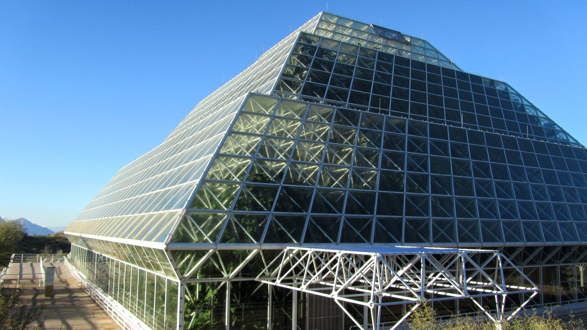
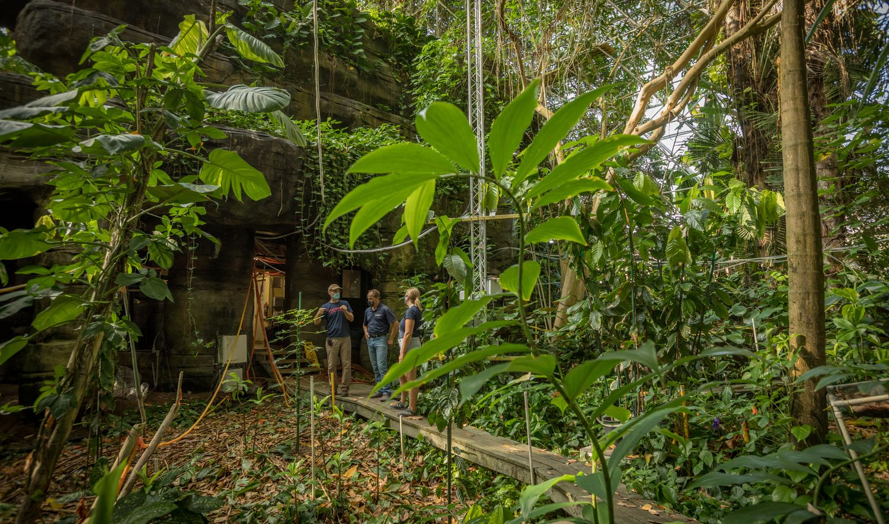
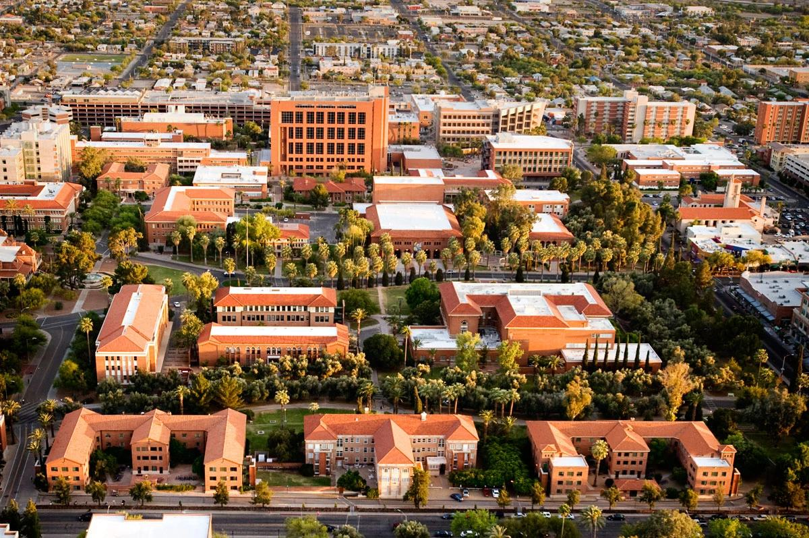

Sunday, May 16 · 1:00 – 4:00 pm
University of Arizona → Biosphere 2
Chartered buses carry participants from campus to B2 on Sunday afternoon. Exact pickup points and departure times will be confirmed closer to the workshop.
Venue & travel
The workshop is held at the conference facilities of Biosphere 2, in Oracle, Arizona, about 30 miles north of Tucson.
The site
Biosphere 2 is a University of Arizona research facility: a sealed glass-and-steel structure enclosing several biomes, built to study Earth systems as coupled wholes.
It is an unusually appropriate place to argue about what a model of an Earth system is for. Participants stay on site, and a guided tour of the facility is scheduled for Sunday afternoon before the science begins.
Because everyone is housed and fed in one place, the workshop keeps its participants together across meals and evenings — which is much of the point.


Getting there
Sunday, May 16 · 1:00 – 4:00 pm
Chartered buses carry participants from campus to B2 on Sunday afternoon. Exact pickup points and departure times will be confirmed closer to the workshop.
Wednesday, May 19 · 9:00 – 11:00 am
Return buses run Wednesday morning after breakfast. Plan departing flights with the transfer time in mind.
Before the workshop

Participants are welcome to arrive early. Saturday, May 15 is set aside for arrival, visits to the Department of Hydrology & Atmospheric Sciences on the University of Arizona campus, and an informal evening get-together at Hoshin’s home. Dinner that evening is on your own.
Accommodation in Tucson for the nights before the transfer is arranged by participants. Recommendations will be posted alongside registration.
Staying on site
Lodging at Biosphere 2 for the nights of Sunday, Monday and Tuesday, together with meals on site, is included in registration. Details and costs will be published when registration opens.
Hosted by

Held at